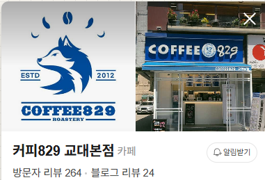

2012년 8월 29일, 교대에서 시작한 이름.
15년의 신뢰와 3개 직영점, 로스팅 기준을
처음 보는 사람도 첫 화면에서 이해하게 만드는 작업입니다.
이 문서는 길게 설득하는 제안서가 아닙니다. 대표님이 아래로 내려가며, COFFEE829라는 이름이 지금 어디서 더 브랜드답게 읽힐 수 있는지 확인하는 진단서입니다.
천천히 오래 읽기보다, 표시해둔 지점만 따라 내려오시면 됩니다. 읽고 나면 다음 통화에서 무엇을 먼저 정리할지 바로 보이게 구성했습니다.
COFFEE829라는 이름은 단순한 카페명이 아닙니다. 교대역 작은 매장에서 시작한 날짜, 15년 동안 버틴 시간, 직접 볶아온 기준이 함께 들어 있는 이름입니다.
COFFEE829는 온라인으로 새로 만들어야 할 브랜드가 아니라, 이미 오프라인에서 검증된 이름입니다. 이번 진단은 더 많이 보이게 하는 일이 아니라, 829라는 이름 안의 시작일과 신뢰가 처음 보는 사람에게 한 번에 읽히는지 확인하는 작업입니다.
대표님이 스레드에 남긴 결론은 선명했습니다.
COFFEE829는 저가 경쟁으로만 설명될 브랜드가 아닙니다. 829라는 시작일, 교대점 15년, 남부터미널점 9년, 서초점 신규 오픈, 로스팅 작업실이 하나의 강한 브랜드 신호로 읽혀야 하는 시점입니다.
현재 네이버플레이스는 로고, 외관 사진, 방문자리뷰, 역세권 정보, 대표님의 설명문까지 기본 자산이 쌓여 있습니다. 다만 좋은 정보가 아래에 흩어져 있어, 처음 보는 사람이 “왜 COFFEE829를 선택해야 하는지”를 첫 화면에서 바로 읽기에는 더 정리할 여지가 있습니다.

교대본점은 방문자리뷰와 블로그리뷰, 교대역 접근성, 외관 사진이 함께 보입니다. 이건 새로 만들어야 할 신뢰가 아니라, 이미 쌓여 있는 신호입니다.
2012년 8월 29일 시작이라는 문장은 COFFEE829라는 이름을 브랜드로 만드는 출발점입니다. 2017년 남부터미널 직영 2호점, 2020년 로스팅 랩실 확장, 대표 직접 로스팅과 운영까지 이어지면 “829”는 숫자가 아니라 직영 로스터리 브랜드의 시간표가 됩니다.
프리미엄 생두 4종 블렌딩은 그냥 메뉴 설명으로 두기보다, COFFEE829의 맛이 흔들리지 않는 기준으로 보여야 합니다.
15년 동안 같은 자리에 있었다는 건, 맛보다 먼저 신뢰가 쌓였다는 뜻입니다.
하지만 새로 보는 사람은 그 15년을 모릅니다. 그래서 온라인 첫 화면은 829라는 이름이 가진 시작일과 COFFEE829가 쌓아온 시간을 짧은 순간 안에 이해시키는 역할을 해야 합니다.
Brazil Yellow Bourbon, Colombia Supremo Tolima, Costa Rica Tarrazu, Guatemala Antigua. 직접 고른 원두를 직접 볶고, 여러 매장에 같은 결로 공급한다는 점은 단순 카페와 직영 로스터리 브랜드를 가르는 기준입니다.
부족하다는 뜻이 아닙니다. 이미 강한데, 처음 보는 사람이 그 강함을 바로 읽을 수 있게 만드는 정리입니다.
걸어서 3분 거리의 신규 매장은 단순 확장이 아닙니다. 교대점에서 오래 버틴 신뢰가 서초의 회사원 동선으로 옮겨가는 장면입니다.
노출은 더 많이 보이게 하는 일입니다. 하지만 먼저 필요한 건, 보이는 순간 어떤 브랜드인지 이해되는 구조입니다.
아래 체크 영역은 설문이 아니라, COFFEE829가 먼저 앞에 세워야 할 방향을 정리하는 장치입니다.
선택한 기준은 다음 통화에서 실행 순서를 잡는 재료가 됩니다.
새로운 마케팅을 얹는 일이 아닙니다. 이미 가진 이름, 오프라인 신뢰, 서초점과 3개 직영 브랜드 화면이 한 번에 읽히도록 정리하는 일입니다.
COFFEE829는 이제 오래된 카페 하나를 더 알리는 단계가 아닙니다.
829라는 이름 안에 담긴 시작일, 교대에서 버틴 시간, 직영점으로 확장된 운영력, 직접 볶아온 기준을 처음 보는 사람도 바로 읽게 만드는 단계입니다.
대표님이 이미 쌓아온 것은 많습니다. 이번에 필요한 건 더 크게 말하는 것이 아니라, 그 시간이 짧은 화면 안에서 브랜드로 읽히게 만드는 일입니다.
다음 통화에서는 가격보다 먼저 실행 순서를 정리합니다.
829 네이밍 스토리, 서초점 첫 화면, 3개 직영점 역할, 로스팅 자산, 대표님 스레드 기록 중 무엇부터 손볼지 좁히고 1개월 진단 정리형과 3개월 안착 운영형의 흐름을 나누면 됩니다.
선택하신 기준은 829라는 이름과 COFFEE829가 먼저 어떤 얼굴로 읽혀야 하는지 보여줍니다. 다음 통화에서는 이 기준으로 실행 순서를 짧게 정리합니다.